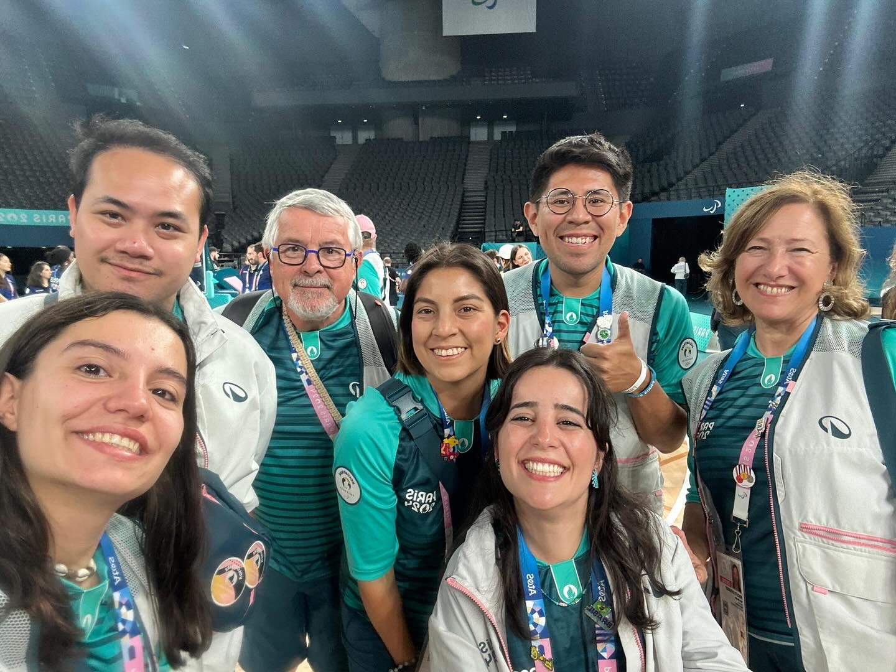
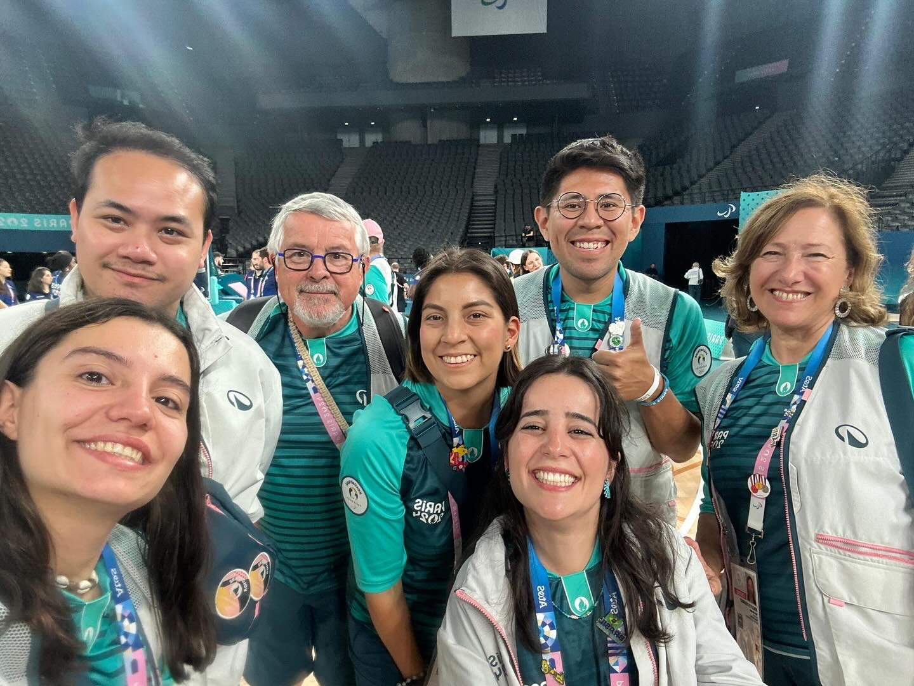
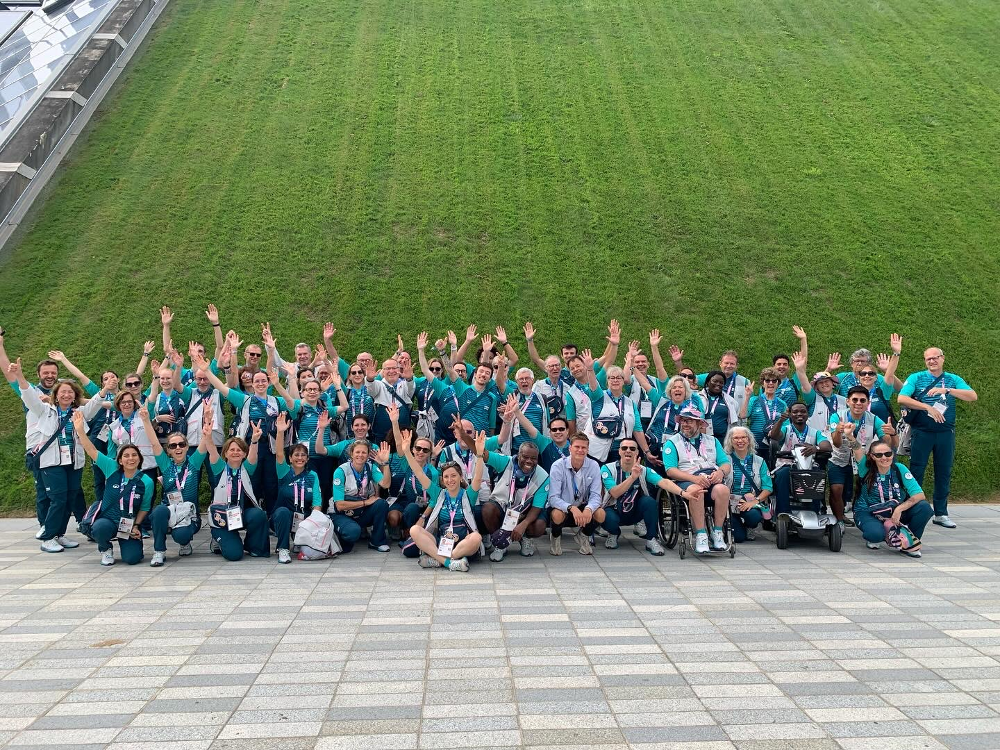
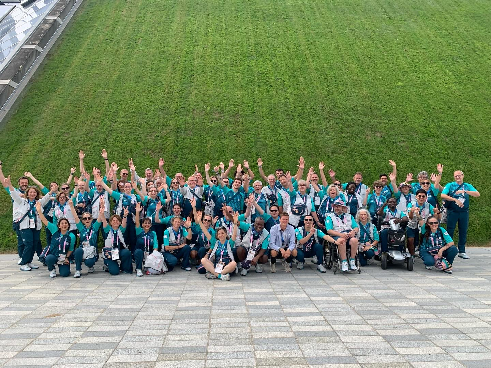

As a Digital Help Volunteer, my main goal is to increase technology literacy and confidence within the local community. Many essential services have moved online, leaving some members of the community behind.

I conduct basic computer classes that break down intimidating tech concepts into simple, manageable steps. Beyond the classroom, I provide one-on-one "Digital Help" support. This involves helping seniors set up new devices (phones, tablets) and assisting them in navigating and filling out complex online forms for government or essential services.
One memorable experience was helping Orietta, a lady from South America, set up her very first MacBook. We spent time walking through the interface until she felt comfortable navigating it on her own. Seeing her transition from uncertainty to confidence was incredibly rewarding, and it reinforces my belief that technology should be intuitive and inclusive for everyone.
My time at the library also highlighted the communication gaps faced by visitors with hearing impairments. This experience directly inspired me to develop my Real-time Sign Language Translator. The project is live and accessible from my work page.
 


 
